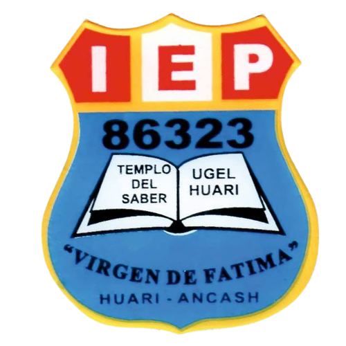

Misión Institucional
Asumimos la responsabilidad de una formación integral a cada uno de nuestros alumnos
en las distintas etapas de su desarrollo, desde el respeto a sus creencias, poniendo el
máximo empeño en el cultivo de valores humanos y en la creación de hábitos de estudio.
Institucion Educativa "Virgen de Fatima"